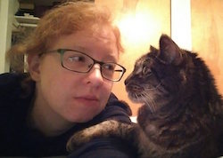

This is a picture of me with one of my cats! His name is Alley. He's really old.
I was born in CT and have lived in FL, WA, IL and now WA again. I'm super happy to have moved back to Seattle a couple years ago; it's my favorite city to live in.
For the last six years, I've worked for an international non-profit called World Bicycle Relief. I'm currently responsible for our donor database and fundraising analytics. I work remotely; the rest of my immediate team is based in Chicago. I collaborate with colleagues in countries all over the world: the UK, Austria, Germany, South Africa, Zambia, Zimbabwe and Kenya.